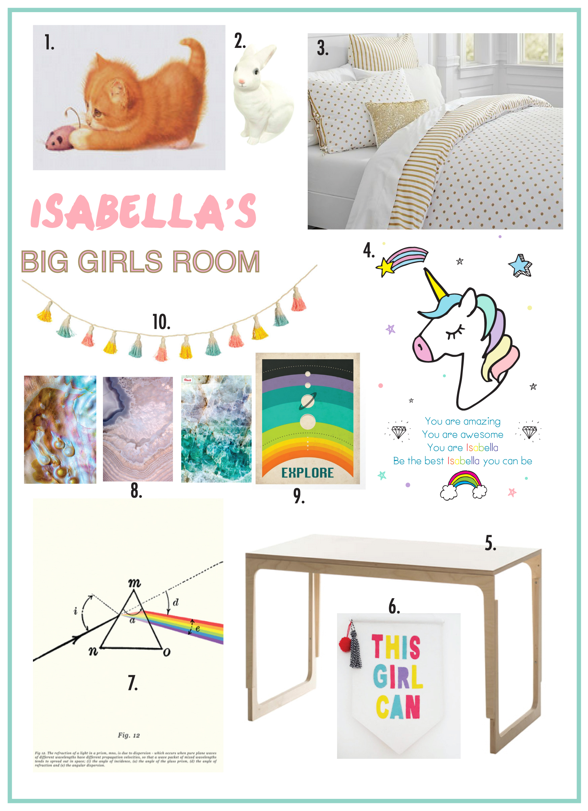

A Big Girls Bedroom for a Big Girl
Planning, designing and decorating a bedroom for a highly-opinionated 8-year old [ known locally as Isabella ] is a daunting feat.
Gone are the days when I could placate with pictures of cute kittens gamboling with a ball of string.
Instead, the room has to reflect the *rather awesome* personality of the inhabitant.
Nowadays the colours have to be punchier, there can be a dash of whimsical but never, I repeat never, any hint of babyish-ness. Never.
I find it always helps to decide the colours first and always best to work with neutral backgrounds/pieces of furniture, adding pops of colour with the decor.

We have chosen the colours *gold, by the way, IS a neutral in our house*, so now need to think about decor.
Science is a huge topic of interest in our house, so ideally images, whilst being pretty, should also be scientifically-interesting.
I love the aesthetic of the crystal and mother-of-pearl prints, and the punchy colours of the Explore print.
- A leftover print from when she was teeny and loved kittens. The setimental attachment to this is HUGE.
- A classic Egmont bedside light
- A cute neutral bedcover
- An inspiring print designed by yours-truly, for the inevitable wobbles that come with being 8 years old
- A place to study AND play with Sylvanian Families
- A motivational banner to inspire
- The science of Rainbows
- Beautiful prints, for similar looky here
- Always trying to broaden their Horizons
- A punchy garland to bring all of the colours together